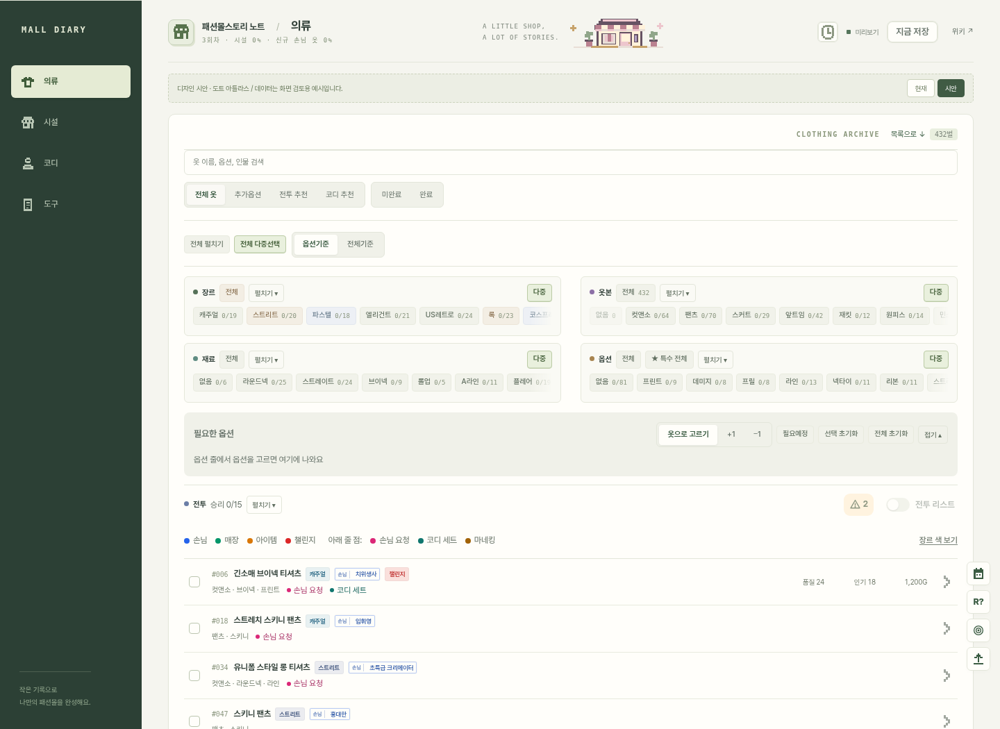

<!doctype html><html lang="ko"><meta charset="utf-8"><meta name="viewport" content="width=device-width,initial-scale=1"><title>도트 아틀라스 · 디자인 시안</title><style>*{box-sizing:border-box}body{margin:0;background:#eeeee5;color:#2c4035;font-family:system-ui,sans-serif}header{max-width:1440px;margin:auto;padding:44px 28px 22px}.eyebrow{font:10px monospace;letter-spacing:.2em;color:#748368}h1{font-size:32px;letter-spacing:-.05em;margin:12px 0}header p{font-size:13px;line-height:1.8;color:#75816d}nav{display:flex;gap:6px;flex-wrap:wrap;margin-top:22px}button{border:1px solid #d5ddc9;background:#fafbf5;color:#66765c;padding:9px 14px;font-size:12px;border-radius:5px;cursor:pointer}button[aria-pressed=true]{background:#354c3b;color:#f0f3e5;border-color:#354c3b}button:focus-visible{outline:2px solid #557158;outline-offset:3px}main{max-width:1440px;margin:auto;padding:0 28px 40px}figure{margin:0;background:#fffefa;border:1px solid #d8dfce;border-radius:9px;overflow:hidden;box-shadow:0 12px 50px #293e3210}figcaption{padding:14px 18px;border-bottom:1px solid #e5e8db;font-size:11px;color:#7b886f;display:flex;justify-content:space-between}img{display:block;width:100%;height:auto}a{color:inherit}footer{text-align:center;font-size:10px;color:#8e9984;margin:0 0 30px}@media(max-width:600px){header{padding:28px 16px 18px}h1{font-size:26px}main{padding:0 12px 24px}button{padding:8px 10px}figure:has(img[data-mobile=true]){max-width:430px;margin:auto}}</style><header><div class="eyebrow">FMS NOTE / DESIGN STUDY 04</div><h1>도트 아틀라스</h1><p>많은 기록을 담는, 작은 게임 공방.<br>기존 구조를 유지한 실제 앱 디자인 시안 · 화면 속 데이터는 검토용 예시입니다.</p><nav aria-label="시안 화면"><button data-file="studio-overview.png" aria-pressed="true">목록</button><button data-file="studio-detail.png" aria-pressed="false">상세</button><button data-file="studio-detail-focus.png" aria-pressed="false">상세 확대</button><button data-file="studio-facility.png" aria-pressed="false">시설</button><button data-file="studio-coord.png" aria-pressed="false">코디</button><button data-file="studio-tools.png" aria-pressed="false">도구</button><button data-file="studio-reference.png" aria-pressed="false">자료</button><button data-file="studio-mobile-390.png" aria-pressed="false">모바일</button><button data-file="current-detail.png" aria-pressed="false">현재 디자인</button></nav></header><main><figure><figcaption><span id="caption">의류 목록</span><a id="full" href="studio-overview.png" target="_blank">원본 크기로 보기 ↗</a></figcaption></figure></main><footer>검토용 정적 갤러리 · 운영 사이트에는 적용하지 않았습니다.</footer><script>document.querySelectorAll('nav button').forEach(b=>b.addEventListener('click',()=>{document.querySelectorAll('nav button').forEach(x=>x.setAttribute('aria-pressed',String(x===b)));const im=document.getElementById('screen');im.src=b.dataset.file;im.alt=b.textContent+' 디자인 시안';im.dataset.mobile=String(b.dataset.file.includes('mobile'));document.getElementById('caption').textContent=b.textContent;document.getElementById('full').href=b.dataset.file;}));</script></html>